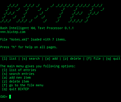

BIXTEP
Archivierte Anleitung
Dieser Artikel wurde archiviert, da er - oder Teile daraus - nur noch unter einer älteren Ubuntu-Version nutzbar ist. Diese Anleitung wird vom Wiki-Team weder auf Richtigkeit überprüft noch anderweitig gepflegt. Zusätzlich wurde der Artikel für weitere Änderungen gesperrt.
Anmerkung: Eine Alternative zu diesem nicht mehr verfügbaren Programm kann Taskwarrior sein.
Zum Verständnis dieses Artikels sind folgende Seiten hilfreich:
 Bixtep
Bixtep  (Bash Intelligent XML Text Processor) ist ein einfach zu bedienendes, XML-basiertes Tool zur Notizverwaltung in der Bash-Shell. Dieser Artikel bezieht sich auf die ältere Version 0.1.1. Diese Version verfügt zwar nur über Grundfunktionen, reagiert aber dafür extrem schnell auf Benutzereingaben. Im September 2011 ist die letzte Version 0.2.2 erschienen.
(Bash Intelligent XML Text Processor) ist ein einfach zu bedienendes, XML-basiertes Tool zur Notizverwaltung in der Bash-Shell. Dieser Artikel bezieht sich auf die ältere Version 0.1.1. Diese Version verfügt zwar nur über Grundfunktionen, reagiert aber dafür extrem schnell auf Benutzereingaben. Im September 2011 ist die letzte Version 0.2.2 erschienen.
Standardmäßig enthält Bixtep eine text-basierte Benutzeroberfläche. Es lässt sich aber auch vollständig über die Kommandozeile bedienen. Damit ist es möglich, es in andere Skripte einzubinden und neue Benutzeroberflächen zu entwickeln.
Obwohl es (bisher) ausschließlich in der Shell ausgeführt werden kann, eignet sich Bixtep mit den einfach zu bedienenden Textmenüs auch für Benutzer ohne Kommandozeilen-Vorkenntnisse.
Mit dem Werkzeug können zügig Notizen erstellt, Quellen verwaltet und diese mit Text-Exzerpten verknüpft werden. Außerdem eignet sich Bixtep auch z.B. für Systemadministratoren, die ohne eine graphische Oberfläche Notizen verwalten müssen.
Funktionsumfang¶
 In der Version 0.1.1 hat Bixtep folgenden Funktionsumfang:
drei strukturierte Inhaltstypen (Notizen, Exzerpte, Quellen)
Stichwortbeziehungen zwischen allen Einträgen
Feldbeziehungen zwischen Exzerpten und Quellen
Volltextsuche
Export von Einträgen als Textdatei
Backups von Bixtep-Dateien
bedienbar über Kommandozeile und Text-Menüs
Bearbeiten von Notizen mit dem über "editor" aufrufbaren Standard-Editor für die Shell (z.B. Nano oder Vim)
Hinweis:
Die Version 0.2.x (auch in deutscher Übersetzung erhältlich) verfügt über einen stark erweiterten Funktionsumfang. Unter anderem können Inhaltstypen, Stichwort- und Feldbeziehungen frei konfiguriert werden.
Installation¶
Vor der Benutzung von Bixtep muss folgendes Paket aus den Standardquellen installiert [1] werden:
xmlstarlet (universe)
 mit apturl
mit apturl
Paketliste zum Kopieren:
sudo apt-get install xmlstarlet
sudo aptitude install xmlstarlet
Bixtep installieren¶
Bixtep selbst lässt sich in wenigen Schritten installieren. Zunächst wird das Programmarchiv von der Projektseite heruntergeladen und entpackt [2]. Dann muss nur noch die Datei bixtep.sh im entpackten Verzeichnis ausführbar gemacht werden [3].
Hinweis!
Fremdsoftware kann das System gefährden.
Start¶
Spätestens jetzt öffnet man ein Terminal [4] und wechselt in das Installationsverzeichnis. Dort startet folgender Befehl das Programm mit der Benutzeroberfläche:
./bixtep.sh -f notizen.xml
Menübefehle¶
In der Benutzeroberfläche kann mit H jederzeit eine Erläuterung der aktuellen Menübefehle eingeblendet werden. Je nach Ansicht in der man sich befindet, sind über das Menü insgesamt folgende Befehle verfügbar.
| Dateiaktionen | |
| F | Dateimenü |
| N | neue Datei erstellen |
| S | Datei auswählen |
| B | Backup erstellen |
| Eintragsaktionen | |
| L | Eintragsliste anzeigen |
| S | Eintrag suchen |
| D | Eintrag anzeigen |
| A | Eintrag hinzufügen |
| E | Eintrag bearbeiten |
| Z | Eintrag löschen |
| X | Eintrag exportieren |
| Navigation | |
| G | zu Eintrag in Liste springen |
| + | vorwärts scrollen |
| - | rückwärts scrollen |
| P | vorheriger Eintrag |
| N | nächster Eintrag |
| C | Aktion abbrechen |
| Q | Programm verlassen |
Weitere Informationen findet man auf der Projektseite in der Dokumentation.
Links¶
Projektseite - nicht mehr vorhandenTaskwarrior - weitere Lösung für die Kommandozeile
Notizen
 Übersichtsartikel
Übersichtsartikel
- Erstellt mit Inyoka
-
 2004 – 2017 ubuntuusers.de • Einige Rechte vorbehalten
2004 – 2017 ubuntuusers.de • Einige Rechte vorbehalten
Lizenz • Kontakt • Datenschutz • Impressum • Serverstatus -
Serverhousing gespendet von